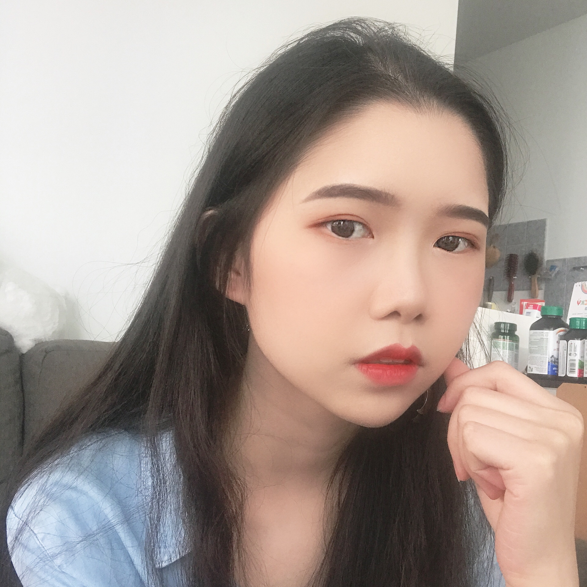
Seeing what cameras get wrong, and carrying a real object into the simulator with its geometry intact.
SeeClear · SPARKPhysically plausible, controllable 3D objects and scenes.
Fishbone · Birth of a Painting · VoroLightParts + joints: sim-ready articulated objects, and a metric for their motion.
SPARK · SPARK+ · ArticulateArenaThin shells, soft bodies and rigid dynamics that move assets the way the real thing moves.
VC Shells · VABDTraining and evaluating robot policies on generated assets, and bringing them back to hardware.
MPC Is All You Need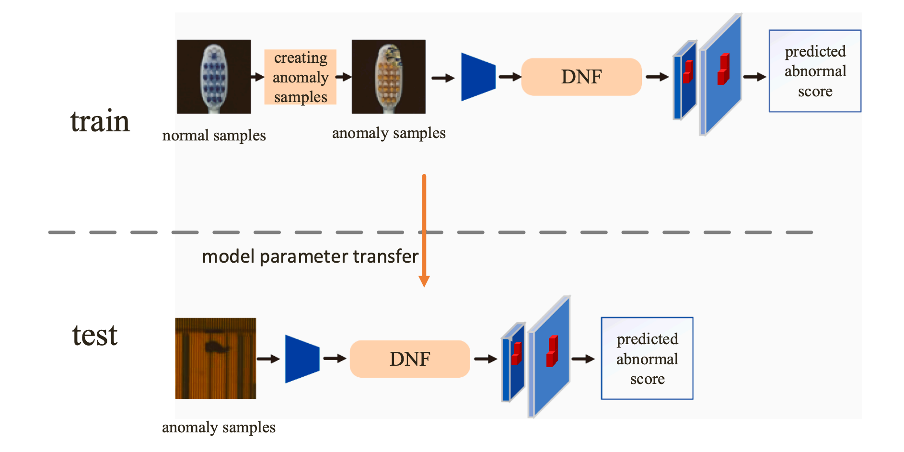
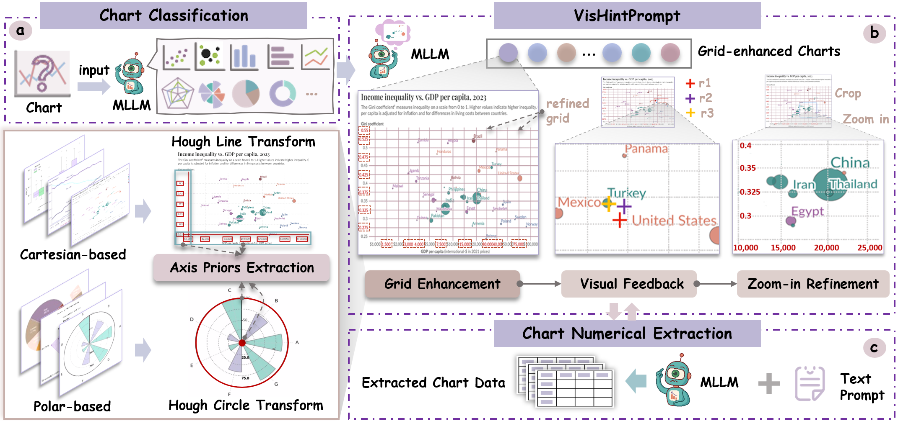
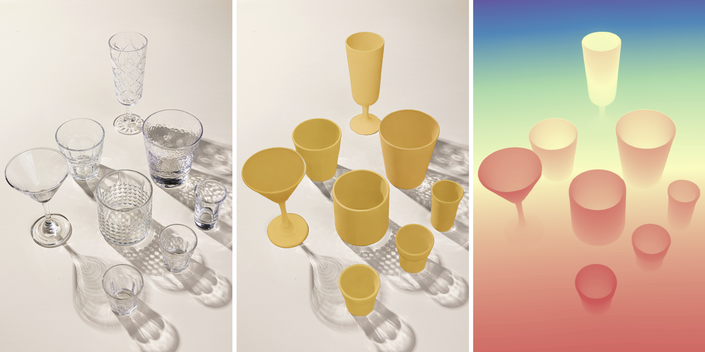
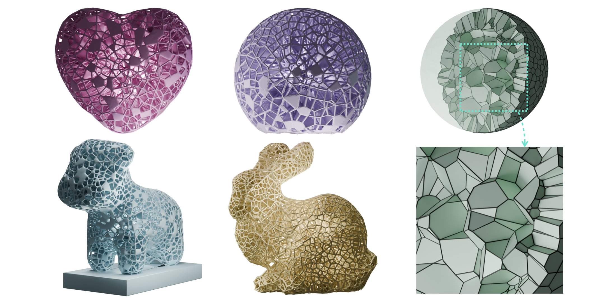
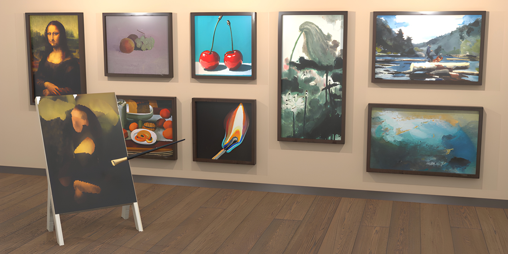
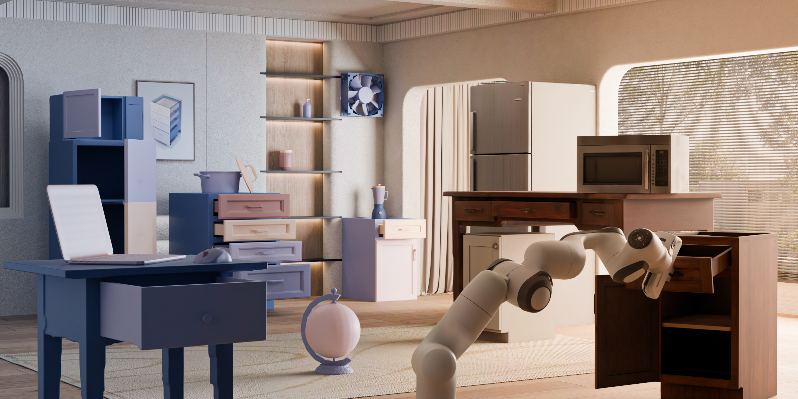
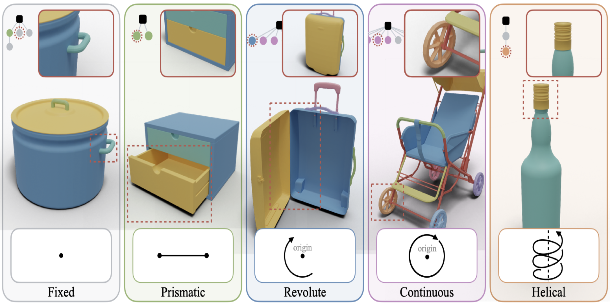
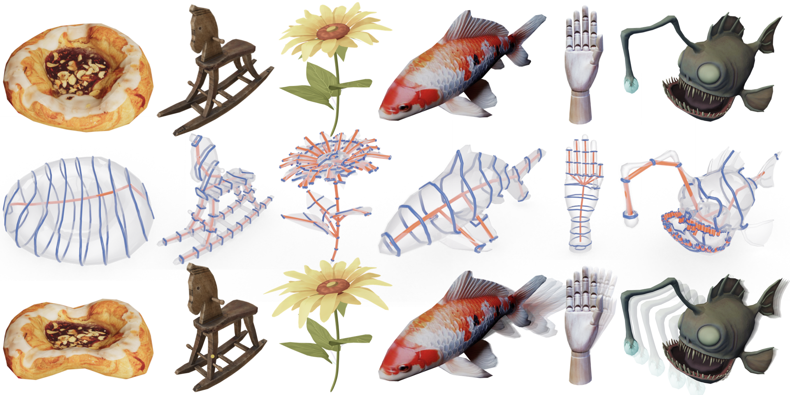
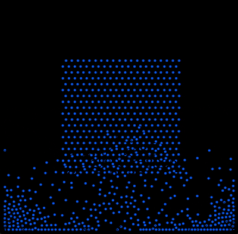
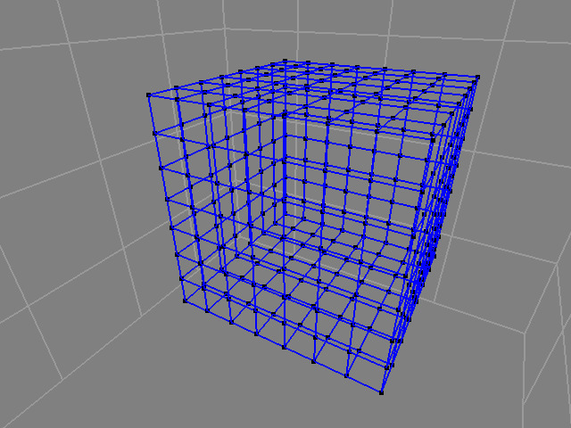
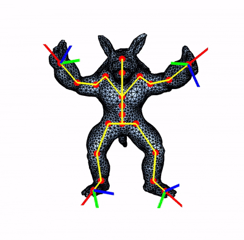
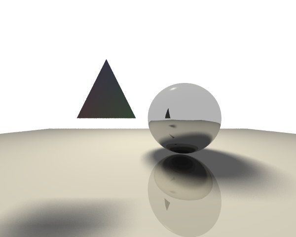
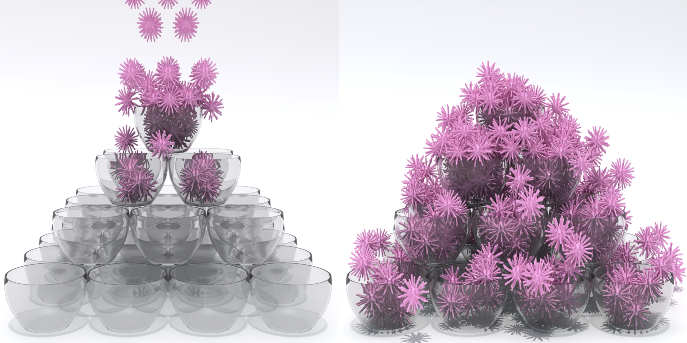
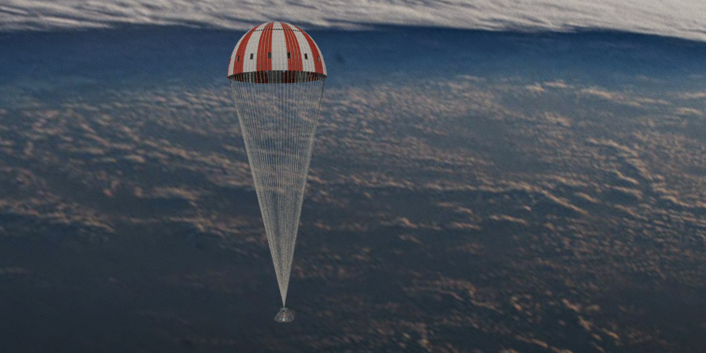
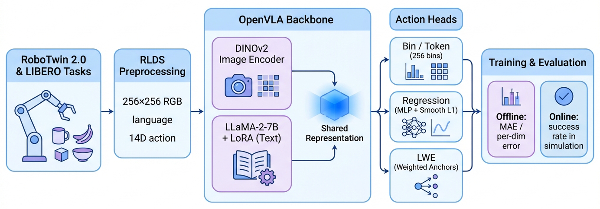
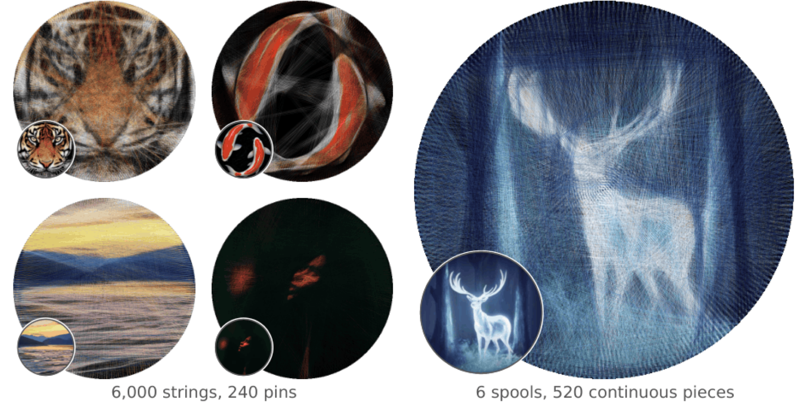
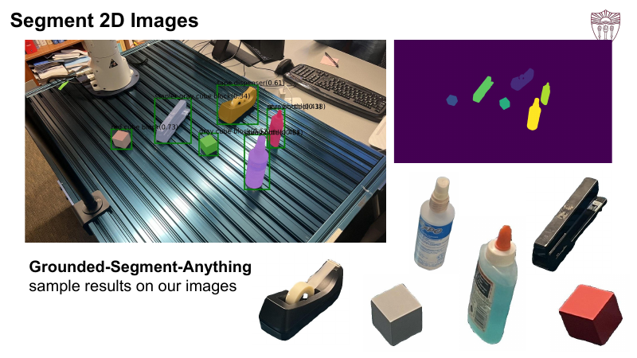
Generative models whose outputs obey kinematics and material behaviour, including 3D-guided video generation.
Growing ArticulateArena from a metric into a full evaluation suite with a cleaner, larger dataset than PartNet-Mobility.
Training VLA policies on SPARK and Fishbone assets and checking whether asset quality and diversity actually transfer to the real robot.